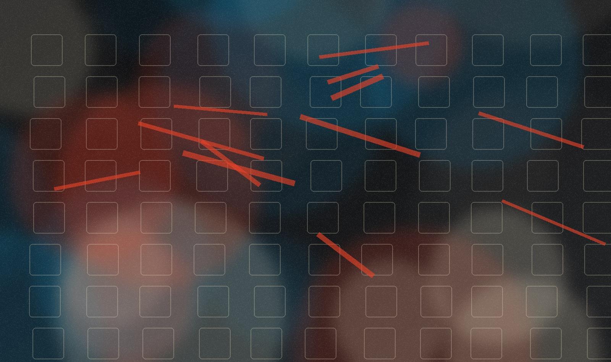
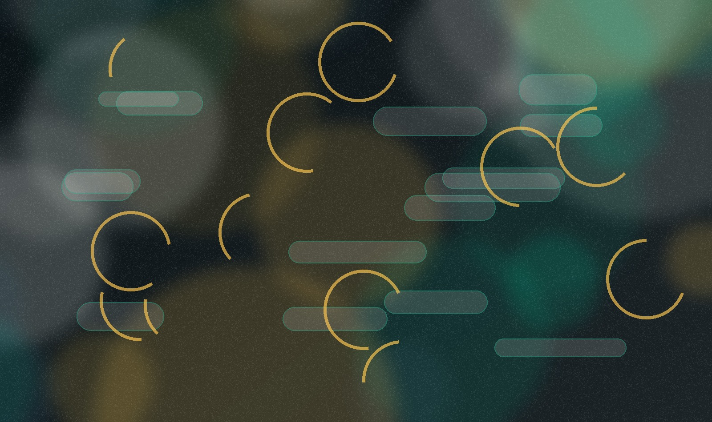
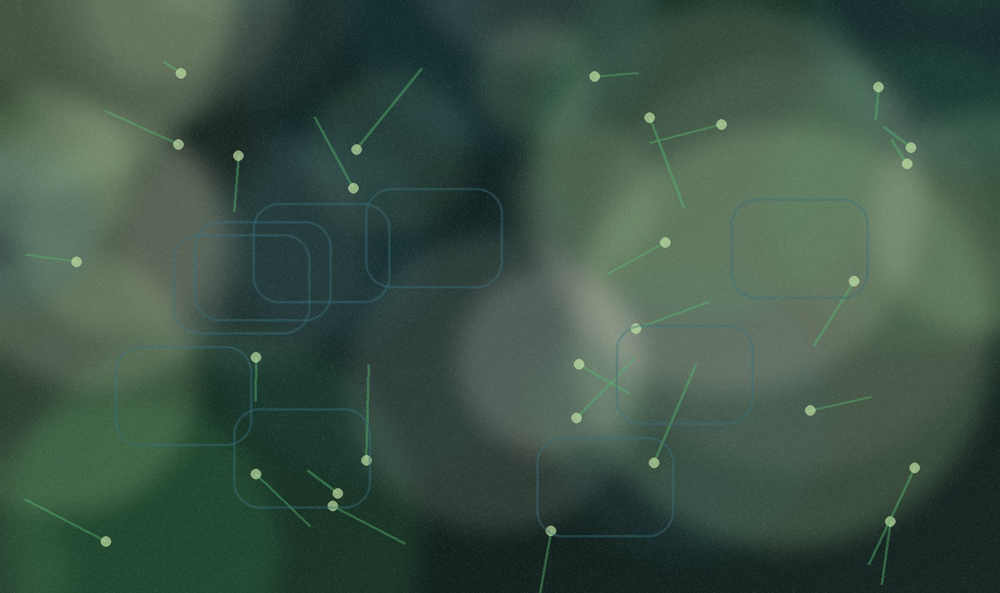
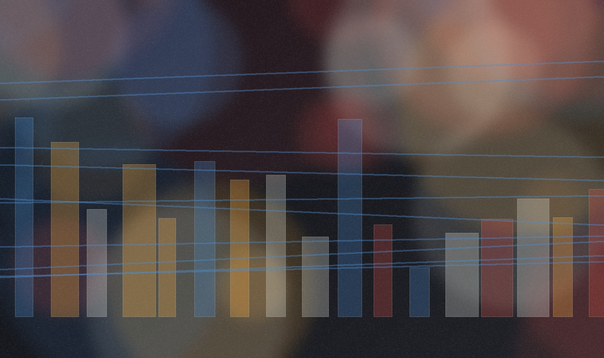

創新如何不被平均化？
01Age of AverageRecoupling Design
AI 與模板化工具讓風格更容易被複製，差異化必須回到文化洞察、手作質感與社群語境。
從 AI 平均化、過度便利、自然與科技重組，到城市生活再編織：2026 的設計價值不只在「解決問題」，而在重新定義問題與關係。
報告把 2026 年的設計挑戰放在四個矛盾場中：越自動化，越需要人味；越便利，越需要有意義的阻力；越強化人類，越要重建與自然的關係；城市越複雜，越要回到社群尺度。
每組不是二選一，而是一個設計判斷：什麼地方要順滑，什麼地方要保留摩擦；什麼該自動化，什麼必須回到人與環境。
AI 與模板化工具讓風格更容易被複製，差異化必須回到文化洞察、手作質感與社群語境。
從無摩擦到有價值的摩擦，設計把使用者從被服務者轉為參與者與學習者。
自然不再是科技的對立面，穿戴、AI、材料與農業系統都在重塑人與生態的互動。
大城市需要交通、能源、公共空間與社群治理的微型基礎建設，讓日常生活重新被照顧。
當 AI、平台與設計工具加速產出「看起來都對」的方案，真正稀缺的是能被記住、能被參與、能帶著不完美痕跡的文化識別。
高效率生產讓品牌與介面更快趨同，注意力成本上升，單靠視覺風格很難建立差異。
不要只找新風格，應該重新接回社群語言、材料時間、地方文化與可被分享的行動。

把香腸品牌放進 Taylor Swift 演唱會語境，用稀缺門票與社群任務創造全國話題。
用「男性少 20% 披薩」把性別薪資差距變成可感知經驗，並導向請願行動。
將 FC St. Pauli 的叛逆精神轉化為多語字體系統，讓品牌一致性與球迷文化並存。
以多元旗幟互相融合的視覺語言，讓 Pride 從單一標誌變成互相支持的系統。
把品牌識別做成會依情緒、資料與情境演化的 AI 介面，挑戰靜態品牌規範。
以回收玻璃的色差、紋理與製程痕跡建立真實感，讓永續不只是標語而是觸感。

便利解決了很多生活阻力，也可能奪走人的掌控感。2026 的機會在於設計「剛剛好的摩擦」，讓使用者願意學、願意做、願意留下記憶。
自動化、AI 推薦與一鍵服務讓效率上升，但也讓體驗變薄，使用者容易失去能力感。
把摩擦設計成能力養成、儀式感、探索路徑或可維修模組，而不是把所有步驟都消除。
把旅行規劃從多平台搜尋改成對話式旅程支持，降低複雜度但保留個人偏好。
以腳架與地面充電板完成感應式充電，把電動自行車補能變成停車動作的一部分。
用袖口觸控啟動背部燈號，讓騎行安全提示更直覺，也把衣物變成互動介面。
每天一字的書寫練習把日曆轉為微型學習工具，讓文化美感透過手部練習內化。
用模組化、開放圖面與可維修設計延長音響壽命，把永續做成使用者可參與的能力。
家用機器人從單一任務轉向跨樓層移動、照護與情感回應，便利開始進入家庭關係。
自然與科技不再是二分。設計的任務，是讓 AI、材料、生物系統與穿戴裝置成為「關係媒介」，而不是單純擴張控制力。
人類增強帶來健康、效率與感知延伸，也帶來隱私、依賴、資源與不平等風險。
將增強科技放入倫理、可近用、再生材料與生態循環中，讓「更強」同時意味著「更會共生」。

以遠端臨場讓使用者進入機器身體，測試身份、身體性與科技代理的邊界。
用 AI 與沉浸式體驗放大自然訊號，讓樹、昆蟲與生態平衡從背景變成可感知主角。
生物受容混凝土與藻類光生物反應器，把城市立面與街道轉為降溫、吸碳與教育媒介。
在新加坡以機器人、垂直農場與零售體驗回應糧食依賴，將農業變成可參觀的城市系統。
健康追蹤從螢幕與數據壓力退一步，走向無感、日常化與材質表達。
3D 列印與仿生美學降低客製義肢門檻，讓醫療科技同時服務效率、尊嚴與個人化。

城市不是完成品，而是持續展開的關係網。未來城市設計要同時處理移動、能源、公共安全、災害韌性與鄰里歸屬。
都市化持續推高密度與複雜度，單點建築或大型願景不足以解決日常生活斷裂。
把交通節點、街燈、充電、廁所、教堂、咖啡館、空地與住宅都視為社會基礎建設。
結合 AI 感測、邊緣運算與預測演算法，讓交通號誌從靜態控制變成安全與減碳工具。
整合公共運輸、共享載具與 CO2 節省資訊，讓低碳選擇變得可理解、可比較。
把自動駕駛小巴變成咖啡、休息與接駁等可變空間，重新定義城市微型服務。
由 16 位建築師與創作者重新設計澀谷公共廁所，把被忽略的設施變成安全與尊嚴的城市地標。
台南教會打開宗教與街角公園的邊界，桃園機場休息室則把台灣草本文化轉為旅客體驗。
以參與式與漸進式住宅回應資源限制，讓居民成為共同設計者，而不只是被安置者。
從報告案例看，強的設計不是把趨勢貼到產品上，而是把張力翻成可操作的取捨。
把報告轉成工作方法，可以用四個問題檢查每個新專案。
不要只問「趨勢是什麼」，先問專案夾在哪兩個反向需求中，例如效率與掌控、標準化與地方性。
列出哪些決策、觸感、學習或社群互動必須保留給人，讓技術支援而不是取代。
不要複製形式，要抽出機制：稀缺性、參與式、可維修、可感知數據、地方記憶或公共照護。
以快閃、Living Lab、服務藍圖或材料樣本測試人與人、人與自然、人與科技的新關係。
本 HTML 簡報依據工作資料夾中的《iF Design Trend Report 2026》PDF 進行中文整理與二次分析，案例名稱與趨勢架構來自該報告；頁面視覺為本站原創抽象圖像，未重製報告內頁圖片。
iF Design Trend Report 2026，由 iF Design 與 The Future:Project 合作，PDF 共 319 頁。
中文簡報網站，用於趨勢溝通、案例參考與設計命題討論；不是原報告逐字翻譯。